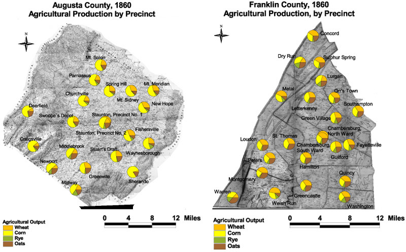

Franklin and Augusta: Agricultural Production by Precinct, 1860
Franklin's crop mix was more diverse than Augusta's and more heavily concentrated on wheat. No precinct in Franklin County averaged as much corn in its crop mix as the precincts in Augusta with the least concentration of corn. In Franklin all precincts except Warren and Dry Run produced more wheat in their crop mix than even the even the most wheat intensive precincts in Augusta.

The maps are derived from a D. H. Davison map of Franklin County, published in 1858 and a Jedediah Hotchkiss map of Augusta County, published in 1870 and based on surveys completed "during the war." The maps have been georeferenced at the Virginia Center for Digital History, using ESRI Arc Info to produce a Geographic Information Systems map and database of households.
Note: Original precinct boundaries are not available. Precinct boundaries were established in the GIS using Thiessen polygons around precinct stations as central places.